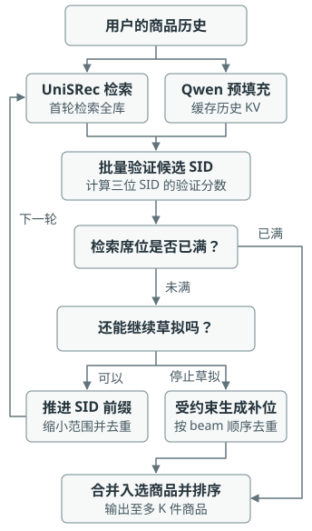

总体架构与训练阶段
给定按时间排列的商品历史，系统要输出最多 K 件下一步可能交互的商品。UniSRec 在全目录中快速找到候选，Qwen 根据历史对每个候选的完整语义 ID（SID）打分。两条模型链路使用同一份商品目录，将检索到的商品 ID、生成的 SID 和最终排序对应起来。
| 训练路径 | 离线产物 | 推理时的用途 |
|---|---|---|
| RQ-VAE 商品编码 | 商品 ID 与三位 SID 的一一映射 | 把用户历史和候选商品转换为 Qwen 能读取的 token。 |
| Qwen 监督微调与 GRPO | 从 SFT 权重继续训练的策略模型 | 验证候选的完整 SID，必要时按目录约束生成商品补位。 |
| UniSRec 检索训练 | 历史编码器与全目录商品向量 | 按用户历史向量和商品向量的内积草拟候选。 |
数据切分与商品目录
工业品目录含 3,686 件商品。每条请求以最近 1–10 件历史商品预测下一件商品。固定切分包含 36,259 条训练请求、4,532 条验证请求和 4,533 条测试请求。
训练历史或训练目标中出现过的 3,647 件商品归为暖商品，其余 39 件为冷商品。测试集的 147 条请求以冷商品为目标。冷暖分组按交互可见性确定，冷商品仍可凭文本向量进入推理目录。
RQ-VAE 与商品语义 ID
RQ-VAE 将每件商品的 2,560 维文本向量压缩为三个离散码。3,280 件暖商品用于计算中心化均值并训练量化器，另用 367 件暖商品的重建均方误差（MSE）选择权重。模型冻结后为全目录编码，包括 39 件冷商品。
| 组件 | 模型架构 |
|---|---|
| 编码器 | 对中心化特征做 MLP 投影，维度 2,560 → 2,048 → 1,024 → 512 → 256 → 128 → 64 → 32。隐藏层使用 ReLU。 |
| 残差量化器 | 三层依次量化残差。每层 256 个 32 维码向量，逐层做 K-means 初始化。 |
| 解码器 | 输入是三层码向量之和，镜像 MLP 维度 32 → 64 → 128 → 256 → 512 → 1,024 → 2,048 → 2,560，最后加回均值。 |
从残差到唯一 SID
编码器将中心化后的商品向量映射到 32 维。第一级选择距输入最近的码向量，扣除它之后，把剩余的误差向量交给下一级。三个码的下标依次构成 SID。下式中，r 是残差，e 是码向量，j 是选中的码下标。
第 1,100 轮的暖商品重建误差最低。导出时固定前两位，在同一前缀内保留已唯一的第三位编码，再将冲突商品与剩余第三位码一一匹配，使分配后的残差平方距离之和最小。三层分别使用 64、227、256 个码，最终 3,686 件商品各有一个唯一的三位 SID。
Qwen 模型与 SFT、GRPO 训练
生成与验证共用的解码器
Qwen2.5-0.5B 使用 24 层因果 Transformer，隐藏宽度为 896。每层采用 14 个查询头、2 个键值头的分组查询注意力，配合 RoPE 位置编码、RMSNorm 和中间宽度为 4,864 的 SwiGLU 前馈网络。输入词嵌入与输出投影共享权重，扩充 SID 后的词表含 152,212 个 token。
多任务监督微调
SFT 联合学习下一商品预测与标题、SID 之间的转换。模型根据提示 x 和已有答案前缀预测下一个答案 token。掩码 m 选出有效答案位置，损失在这些位置取平均。
| 输入 | 监督目标 | 训练样本 |
|---|---|---|
| 历史 SID | 下一商品 SID | 36,259 |
| 历史 SID | 下一商品标题 | 36,259 |
| 商品 SID | 商品标题 | 3,686 |
| 商品标题 | 商品 SID | 3,646 |
| 历史商品标题 | 下一商品 SID | 36,259 |
基于候选组奖励的 GRPO
策略模型和参考模型都由 SFT 验证损失最低的第 5,187 步权重初始化。对每个提示，策略模型用受约束的 beam search 生成 16 个合法 SID。完整命中目标的候选得 1 分。若组内有命中，错误候选按名次得到归一化的负奖励，越靠前的错误惩罚越大。若全组未命中，则奖励全为零。
同组奖励 R 的均值和标准差决定每个候选的相对优势。参考模型为相同 token 提供对数概率，减去策略模型对数概率得到 Δ，据此计算逐 token 的 KL 估计。
目标把序列优势传给有效生成 token，并按 0.001 的权重加入 KL 惩罚。ℓ 是策略模型的 token 对数概率，sg 表示停止梯度。
训练先在每个候选的有效生成 token 上求均值，再对候选求均值。每 512 个优化步将策略权重混入参考模型。第 621 步的验证 SID NDCG@10 最高，对应的策略模型用于在线 SID 验证和受约束生成。
UniSRec 检索模型
商品分支和历史分支共享一个含 8 个专家的门控适配器，将冻结的 2,560 维文本向量投影到 300 维。商品分支对适配后的向量做 L2 归一化，得到检索索引中的商品表示。
历史分支先给各商品向量加上位置嵌入，再通过 2 层因果 Transformer。每层有 2 个注意力头，前馈宽度为 256。最后一个有效位置的输出经过 L2 归一化，得到当前请求的历史向量。
训练以真实下一商品为正类，在 3,647 件训练可见商品上计算交叉熵，内积得分的温度为 0.07。推理使用第 20 轮的历史编码器和全目录的归一化商品向量。每条请求只需编码一次历史，各轮草拟可复用该向量。
联合投机推理流程
当请求需要 K 件商品时，本实验优先为检索分配全部 K 个席位，每轮最多草拟 2K 件。以 10 个推荐位为例，首轮可提交 20 件商品给 Qwen 验证。图 1 展示席位填满、仍可草拟和停止草拟后的三种路径。

完整 SID 的并行评分
Qwen 对历史提示 H 做一次预填充，将键值缓存（KV）供候选复用。历史末位的 logits 给出首个 SID token 的概率。再把每个候选的前两位作为独立分支输入，一次前向计算即可得到第二、第三位的条件概率。
商品 i 的分数取三位 SID token 在全词表上的条件对数概率均值。计算只覆盖这三个 token，历史、换行和 EOS 均从评分范围剔除。同一请求内，多个商品共享的前缀还可复用中间计算。
候选草拟、补位与排序
首轮在全库检索，通过接受条件的候选进入排序池，按验证分数保留至检索配额。席位不足且允许继续时，系统将合法 SID 前缀延长一位，UniSRec 在对应商品范围内重新草拟，并排除已经草拟过的商品 ID。
停止草拟后，空缺席位由受约束的 beam search 按生成顺序去重补齐。检索与生成均有商品入选时，再按统一分数排列合并后的名单。纯 beam 路径沿用生成顺序。
| 推理参数 | 采用值 |
|---|---|
| 输出上限 K | 1、5、10、20、50 |
| 每轮草拟上限 | 2K |
| 检索份额 α | 1 |
| 最大草拟轮数 | 3 |
| 引导前缀 beam 宽度 | 1 |
| 完整生成 beam 宽度 | 50 |